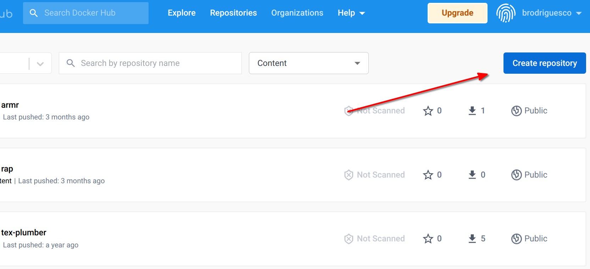

6 Docker
What you’ll have learned by the end of the chapter: build self-contained, truly reproducible analytical pipelines thanks to Docker.
6.1 Introduction
Up until now, we’ve been using Nix as a powerful tool for creating reproducible development environments directly on our machines. Nix gives us fine-grained control over every package and dependency in our project, ensuring bit-for-bit reproducibility. However, when it comes to distributing a data product, another technology, Docker, is incredibly popular.
While Nix manages dependencies for an application that runs on a host operating system, Docker takes a different approach: it packages an application along with a lightweight operating system and all its dependencies into a single, portable unit called a container. This container can then run on any machine that has Docker installed, regardless of its underlying OS.
The idea is to not only deliver the source code for our data products, but also include it inside a complete package that contains not only R and the required libraries, but also the necessary components of the operating system itself (which will usually be a flavor of Linux, like Ubuntu). This approach solves the “it works on my machine” problem in a very direct way.
For rebuilding a data product, a single command can be used which will pull the Docker image from a registry, start a container, build the data product, and stop.
If you’ve never heard of Docker before, this chapter will provide the basic knowledge required to get started. Let’s start by watching this very short video that introduces the core concepts.
In a sense, Docker can be seen as a lightweight virtual machine running a Linux distribution (usually Ubuntu) that you can interact with using the command line. This also means that familiarity with Linux distributions will make using Docker easier. Thankfully, there is a very large community of Docker users who also use R. This community is organized as the Rocker Project and provides a very large collection of Dockerfiles to get started easily. As you saw in the video above, Dockerfiles are simple text files that define a Docker image, from which you can start a container.
While Nix and Docker are often seen as competing tools for environment management, they can be used together effectively by leveraging their respective strengths. A powerful pattern is to use Nix inside a Docker container. In this setup, you start with a minimal base Docker image that has Nix installed. Then, you use Nix to declaratively build the precise, bit-for-bit reproducible development environment within the image. Docker’s role then shifts from environment provisioning to simply being a portable, universal runtime for this Nix-managed environment, making it excellent for deployment.
This approach contrasts with using Docker alone for reproducibility. While many attempt this, it’s not Docker’s core strength. Achieving a reproducible docker build often requires “abusing” Docker’s features—pinning base image hashes, freezing system package versions, and using specific package manager snapshots—because Docker was designed for creating portable runtime containers, not for guaranteeing reproducible builds. Its true reproducibility promise is that a specific, pre-built image will always launch an identical container, not that building the same Dockerfile twice will yield an identical image.
6.2 Docker essentials
6.2.1 Installing Docker
The first step is to install Docker. You’ll find the instructions for Ubuntu here, for Windows here (read the system requirements section as well!) and for macOS here (make sure to choose the right version for the architecture of your Mac, if you have an M1 Mac use Mac with Apple silicon).
After installation, it might be a good idea to restart your computer, if the installation wizard does not invite you to do so. To check whether Docker was installed successfully, run the following command in a terminal (or on the desktop app on Windows):
docker run --rm hello-worldThis should print the following message:
Hello from Docker!
This message shows that your installation appears to be working correctly.
To generate this message, Docker took the following steps:
1. The Docker client contacted the Docker daemon.
2. The Docker daemon pulled the "hello-world" image from the Docker Hub.
(amd64)
3. The Docker daemon created a new container from that image which runs the
executable that produces the output you are currently reading.
4. The Docker daemon streamed that output to the Docker client, which sent it
to your terminal.
To try something more ambitious, you can run an Ubuntu container with:
$ docker run -it ubuntu bash
Share images, automate workflows, and more with a free Docker ID:
https://hub.docker.com/
For more examples and ideas, visit:
https://docs.docker.com/get-started/If you see this message, congratulations, you are ready to run Docker. If you see an error message about permissions, this means that something went wrong. If you’re running Linux, make sure that your user is in the Docker group by running:
groups $USERyou should see your username and a list of groups that your user belongs to. If a group called docker is not listed, then you should add yourself to the group by following these steps.
6.2.2 The Rocker Project and image registries
When running a command like:
docker run --rm hello-worldwhat happens is that an image, in this case hello-world gets pulled from a so-called registry. A registry is a storage and distribution system for Docker images. Think of it as a GitHub for Docker images, where you can push and pull images, much like you would with code repositories. The default public registry that Docker uses is called Docker Hub, but companies can also host their own private registries to store proprietary images. When you execute a command like docker run, the Docker daemon first checks if the image is present on your local machine. If not, it connects to the configured registry, downloads the required image layers, and then assembles them to run the container.
Many open source projects build and distribute Docker images through Docker Hub, for example the Rocker Project.
The Rocker Project is instrumental for R users that want to use Docker. The project provides a large list of images that are ready to run with a single command. As an illustration, open a terminal and paste the following line:
docker run --rm -e PASSWORD=yourpassword -p 8787:8787 rocker/rstudioOnce this stops running, go to http://localhost:8787/ and enter rstudio as the username and yourpassword as the password. You should login to a RStudio instance: this is the web interface of RStudio that allows you to work with R from a server. In this case, the server is the Docker container running the image. Yes, you’ve just pulled a Docker image containing Ubuntu with a fully working installation of RStudio web!
(If you cannot connect to http://localhost:8787, try with the following command:
docker run --rm -ti -d -e PASSWORD=yourpassword -p 8787:8787 --network="host" rocker/rstudio)
Let’s open a new script and run the following lines:
data(mtcars)
summary(mtcars)You can now stop the container (by pressing CTRL-C in the terminal). Let’s now rerun the container… (with the same command as before) you should realize that your script is gone! This is the first lesson: whatever you do inside a container will disappear once the container is stopped. This also means that if you install the R packages that you need while the container is running, you will need to reinstall them every time. Thankfully, the Rocker Project provides a list of images with many packages already available. For example to run R with the {tidyverse} collection of packages already pre-installed, run the following command:
docker run --rm -ti -e PASSWORD=yourpassword -p 8787:8787 rocker/tidyverseIf you compare it to the previous command, you see that we have replaced rstudio with tidyverse. This is because rocker/tidyverse references an image, hosted on Docker Hub, that provides the latest version of R, RStudio server and the packages from the {tidyverse}. You can find the image hosted on Docker Hub here. There are many different images, and we will be using the versioned images made specifically for reproducibility. For now, however, let’s stick with the tidyverse image, and let’s learn a bit more about some specifics.
6.2.3 Basic Docker workflow
You already know about running containers using docker run. With the commands we ran before, your terminal will need to stay open, or else, the container will stop. Starting now, we will run Docker commands in the background. For this, we will use the -d flag (d as in detach), so let’s stop the container one last time with CTRL-C and rerun it using:
docker run --rm -d -e PASSWORD=yourpassword -p 8787:8787 rocker/tidyverse(notice -d just after run). You can run several containers in the background simultaneously. You can list running containers with docker ps:
docker ps
CONTAINER ID IMAGE COMMAND CREATED STATUS PORTS NAMES
c956fbeeebcb rocker/tidyverse "/init" 3 minutes ago Up 3 minutes 0.0.0.0:8787->8787/tcp, :::8787->8787/tcp elastic_morseThe running container has the ID c956fbeeebcb. Also, the very last column, shows the name of the running container. This is a label that you can change. For now, take note of ID, because we are going to stop the container:
docker stop c956fbeeebcbAfter Docker is done stopping the running container, you can check the running containers using docker ps again, but this time no containers should get listed. Let’s also discuss the other flags --rm, -e and -p. --rm removes the container once it’s stopped. Without this flag, we can restart the container and all the data and preferences we saved will be restored. However, this is dangerous because if the container gets removed, then everything will get lost, forever. We are going to learn how to deal with that later. -e allows you to provide environment variables to the container, so in this case the $PASSWORD variable. -p is for setting the port at which your app is going to get served. Let’s now rerun the container, but by giving it a name:
docker run -d --name my_r --rm -e PASSWORD=yourpassword -p 8787:8787 rocker/tidyverseNotice the --name flag followed by the name we want to use, my_r. We can now interact with this container using its name instead of its ID. For example, let’s open an interactive bash session. Run the following command:
docker exec -ti my_r bashYou are now inside a terminal session, inside the running container! This can be useful for debugging purposes. It’s also possible to start R in the terminal, simply replace bash by R in the command above.
Finally, let’s solve the issue of our scripts disappearing. For this, create a folder somewhere on your computer (host). Then, rerun the container, but this time with this command:
docker run -d --name my_r --rm -e PASSWORD=yourpassword -p 8787:8787 -v /path/to/your/local/folder:/home/rstudio/scripts:rw rocker/tidyversewhere /path/to/your/local/folder should be replaced to the folder you created. You should now be able to save the scripts inside the scripts/ folder from RStudio and they will appear in the folder you created.
6.2.4 Making our own images
To create our own images, you can start from an image provided by an open source project like Rocker, or you can start from the base Ubuntu or Apline Linux images. These images are barebones compared to the ones from Rocker, but as a consequence they are very lightweight, which in some cases can be important. For the remainder of the course, we are going to start from a base Ubuntu image, and use Nix to add our software stack.
The snippet below is a minimal Dockerfile that shows exactly this:
FROM ubuntu:latest
RUN apt update -y
RUN apt install curl -y
# We don't have R nor {rix} in this image, so we can bootstrap it by downloading
# the default.nix file that comes with {rix}. You can also download it beforehand
# and then copy it to the Docker image
RUN curl -O https://raw.githubusercontent.com/ropensci/rix/main/inst/extdata/default.nix
# The next 4 lines install Nix inside Docker. See the Determinate Systems installer's documentation
RUN curl --proto '=https' --tlsv1.2 -sSf -L https://install.determinate.systems/nix | sh -s -- install linux \
--extra-conf "sandbox = false" \
--init none \
--no-confirm
# Adds Nix to the path, as described by the Determinate Systems installer's documentation
ENV PATH="${PATH}:/nix/var/nix/profiles/default/bin"
ENV user=root
# Set up rstats-on-nix cache
# Thanks to the rstats-on-nix cache, precompiled binary packages will
# be downloaded instead of being compiled from source
RUN mkdir -p /root/.config/nix && \
echo "substituters = https://cache.nixos.org https://rstats-on-nix.cachix.org" > /root/.config/nix/nix.conf && \
echo "trusted-public-keys = cache.nixos.org-1:6NCHdD59X431o0gWypbMrAURkbJ16ZPMQFGspcDShjY= rstats-on-nix.cachix.org-1:vdiiVgocg6WeJrODIqdprZRUrhi1JzhBnXv7aWI6+F0=" >> /root/.config/nix/nix.conf
# Copy a script to generate the environment of interest using {rix}
COPY generate_env.R .
# This will overwrite the default.nix we downloaded previously with a new
# expression generated from running `generate_env.R`
RUN nix-shell --run "Rscript generate_env.R"
# We now build the environment
RUN nix-build
# Finally, we run `nix-shell`. This will get executed when running
# containers from this image. You can of course put anything in here
CMD nix-shellThis can seem quite complicated, but if you take the time to read the comments, you’ll see that it’s actually quite simple.
Every Dockerfile starts with a FROM statement. This means that this Dockerfile will use the ubuntu:latest image as a starting point.
We start off from the ubuntu:latest image: you might read online that this is not a good practice, and that instead one should use a stable image, for example ubuntu:24.04 which will always use version 24.04 of Ubuntu. This is true IF you don’t use Nix. But since we are using Nix to set up the reproducible development environment, we can use ubuntu:latest: our development environment will always be exactly the same, thanks to Nix.
Then, every command we wish to run starts with a RUN statement. We install and configure Nix, copy an R script to generate the environment (we could also copy an already generated default.nix instead) and then build the environment. Finally, we finish by running nix-shell when executing a container which is the command prepended with CMD.
This image actually does two things:
- a first step which consists in setting up Nix inside Docker;
- a second step which consists in setting up our project-specific Nix development environment.
Because the first step is generic, we will split up this in two stages.
First, create a new Dockerfile in a separate directory, with a new Git repo so that you can commit and push it (later in the book we will set up continuous integration to build and publish this image automatically):
# Stage 1 — Base with Nix and rstats-on-nix cache
FROM ubuntu:latest AS nix-base
RUN apt update -y && apt install -y curl
# Install Nix via Determinate Systems installer
RUN curl --proto '=https' --tlsv1.2 -sSf -L https://install.determinate.systems/nix | sh -s -- install linux \
--extra-conf "sandbox = false" \
--init none \
--no-confirm
ENV PATH="/nix/var/nix/profiles/default/bin:${PATH}"
ENV user=root
# Configure Nix binary cache
RUN mkdir -p /root/.config/nix && \
echo "substituters = https://cache.nixos.org https://rstats-on-nix.cachix.org" > /root/.config/nix/nix.conf && \
echo "trusted-public-keys = cache.nixos.org-1:6NCHdD59X431o0gWypbMrAURkbJ16ZPMQFGspcDShjY= rstats-on-nix.cachix.org-1:vdiiVgocg6WeJrODIqdprZRUrhi1JzhBnXv7aWI6+F0=" >> /root/.config/nix/nix.confCommit and push. Then, we need to build this image once, and tag it:
docker build -t nix-base:latest .This image is now available on our machines under the tag nix-base:latest, and we can refer to it for any of our projects. For a new project, simply reuse it like so:
FROM nix-base:latest
COPY generate_env.R .
RUN curl -O https://raw.githubusercontent.com/ropensci/rix/main/inst/extdata/default.nix
RUN nix-shell --run "Rscript generate_env.R"
RUN nix-build
CMD ["nix-shell"]The issue with this approach is that now you have created a dependency between the two Dockerfiles which you need to manage. I would recommend the second approach only if you can push the first image with the Nix base on a registry (either public or a private one from your company). Later in this chapter we will publish the first image.
In the same folder than the second Dockerfile, add the required generate_env.R script:
library(rix)
rix(
date = "2025-08-04",
r_pkgs = c("dplyr", "ggplot2"),
py_conf = list(
py_version = "3.13",
py_pkgs = c("polars", "great-tables")
),
ide = "none",
project_path = ".",
overwrite = TRUE
)This will setup an environment for our project. Let’s stop here, and build the image:
docker build -t my-project .and now run a container:
docker run -it --rm --name my-project-container my-projectThis should drop you in an interactive Nix shell running inside Docker! As Docker is more popular than Nix, in particular in enterprise settings, this makes sharing development environments easier.
Remember, anything you do in this container will be lost after you stop it. So if you want to use it to work interactively on files, you should mount a volume:
docker run --rm --name my-project-container -v /path/to/your/local/project-folder/workspace:/workspace:rw -w /workspace my-projectThis will mount a folder called workspace inside a running Docker container that will map to a folder called workspace on your current project folder. This acts as a kind of tunnel between the two, any file put there will be available and editabale on the other side.
While this is good to know, I don’t recommend using Docker to work interactively. Use Nix for this instead, and use Docker to then deploy whatever product you’ve been working on once you’re done.
Before moving on to actually build projects using Docker, let’s first publish the base Nix image on Docker Hub to easily re-use it across projects.
6.2.5 Publishing images on Docker Hub
If you want to share Docker images through Docker Hub, you first need to create a free account. A free account gives you unlimited public repositories. If you want to make your images private, you need a paid account. For our purposes though, a free account is more than enough. In the next section, we will discuss how you can build new images upon other images without using Docker Hub.
We will be uploading the image nix-base to Docker Hub.
Now is the right moment to talk about the docker images command. This will list all the images available on your computer. You should see something like this:
REPOSITORY TAG IMAGE ID CREATED SIZE
nix-base latest d3764d067534 2 days ago 1.61GB
dev_env_r latest 92fcf973ba42 2 days ago 1.42GB
raps_ubuntu_r latest 7dabadf3c7ee 4 days ago 1.04GB
rocker/tidyverse 4.2.2 545e4538a28a 3 weeks ago 2.19GB
rocker/r-ver 4.2.2 08942f81ec9c 3 weeks ago 824MBTake note of the image id of the nix-base image (second line), we will use it to push our image to Docker Hub. Also, don’t be alarmed by the size of the images, because this is a bit misleading. Different images that use the same base (so here Ubuntu), will reuse “layers” such that they don’t actually take up the size that is printed by docker images. So if images A and B both use the same version of Ubuntu as a base, but image A has RStudio installed and B also RStudio but Python as well, most of the space that A and B take up will be shared. The only difference will be that B will need a little bit more space for Python.
You can also list the running containers with docker container ls (or docker ps). If a container is running you should see something like this:
CONTAINER ID IMAGE COMMAND CREATED
545e4538a28a rocker/tidyverse "/init" 3 minutes ago
STATUS PORTS NAMES
Up 3 minutes 0.0.0.0:8787->8787/tcp, :::8787->8787/tcp elastic_morseYou can stop the container by running docker stop CONTAINER ID. So, list the images again using docker images. Take note of the image id of the image you want to push to Docker Hub.
Now, log in to Docker Hub using docker login (yes, from your terminal). You will be asked for your credentials, and if log in is successful, you see a message Log In Succeeded in your terminal (of course, you need first to have an account on Docker Hub).
Now, you need to tag the image (this gives it a version number). So you would write something like:
docker tag IMAGE_ID your_username_on_docker_hub/your_image:version1so in my case, it would be:
docker tag 92fcf973ba42 brodriguesco/nix-base:latestNext, I need to push it using docker push:
docker push brodriguesco/nix-base:latestYou can go check your profile and your repositories, you should see your image there.
This image can now be used as a stable base for developing our pipelines. Here’s how I can now use this base image for our project:
FROM brodriguesco/nix-base:latest
RUN mkdir ...
Now I’m re-using the image that defines the development environment, and I can do so for as many projects as necessary. I would recommend putting a link to the base image as a comment just before the first FROM.
If you want to test this, you could delete all images and containers from your system. This way, when you build the image using the above Dockerfile, it will have to pull from Docker Hub. To delete all containers, start by using docker system prune. You can then delete all images using docker rmi $(docker images -a -q). This should remove everything.
If you work for a company that has its own private registry, the process will be essentially the same, as it’s just that Docker would have been configured to pull and push to the private registry instead.
In the next section, I’ll explain to you how you can re-use base images like we just did, but without using Docker Hub, in case you cannot, or do not want, to rely on it.
6.3 Building data products using Docker
We now know how to save files to our computer from Docker. But as the container gets stopped (and removed because of –rm) if we install R packages, we would need to reinstall them each time. The solution is thus to create our own Docker image, and as you will see, it is quite simple to get started. Create a folder somewhere on your computer, and add a text file called Dockerfile (without any extension). In this file add, the following lines:
FROM rocker/tidyverse
RUN R -e "devtools::install_github('b-rodrigues/myPackage', ref = 'e9d9129de3047c1ecce26d09dff429ec078d4dae')"Then we need to build the image. For this, run the following line:
docker build -t my_package .This will build the image right in this folder and call it my_package.
Sending build context to Docker daemon 2.048kB
Step 1/2 : FROM rocker/tidyverse
---> a838ee142831
Step 2/2 : RUN R -e "devtools::install_github('b-rodrigues/myPackage', ref = 'e9d9129de3047c1ecce26d09dff429ec078d4dae')"
---> Using cache
---> 17d5d3179293
Successfully built 17d5d3179293
Successfully tagged my_package:latestBy running docker images you should see all the images that are on your PC (with running containers or not):
docker imagesREPOSITORY TAG IMAGE ID CREATED SIZE
my_package latest 17d5d3179293 13 minutes ago 2.16GB
rocker/tidyverse latest a838ee142831 11 days ago 2.15GB
rocker/rstudio latest d110bab4d154 11 days ago 1.79GB
hello-world latest feb5d9fea6a5 13 months ago 13.3kBYou should see that each image takes up a lot of space: but this is misleading. Each image that builds upon another does not duplicate the same layers. So this means that our image, my_package, only add the {myPackage} package to the rocker/tidyverse image, which in turn only adds the {tidyverse} packages to rocker/rstudio. This means unlike what is shown here, all the images to not need 6GB of space, but only 2.16GB in total. So let’s now make sure that every other container is stopped (because we will run our container on the same port) and let’s run our container using this command:
docker run --rm -d --name my_package_container -e PASSWORD=yourpassword -p 8787:8787 my_packageYou should now see {myPackage} available in the list of packages in the RStudio pane. Let’s now go one step further. Let’s create one plot from within Docker, and make it available to the person running it. Let’s stop again our container:
docker stop my_package_containerNow, in the same folder where your Dockerfile resides, add the following R script (save this inside my_graph.R):
library(ggplot2)
library(myPackage)
data("unemp")
canton_data <- clean_unemp(unemp,
level_of_interest = "Canton",
col_of_interest = active_population)
my_plot <- ggplot(canton_data) +
geom_col(
aes(
y = active_population,
x = year,
fill = place_name
)
) +
theme(legend.position = "bottom",
legend.title = element_blank())
ggsave("/home/rstudio/scripts/my_plot.pdf", my_plot)This script loads the data, and saves it to the scripts folder (as you see, this is a path inside of the Docker image). We will also need to update the Dockerfile. Edit it to look like this:
FROM rocker/tidyverse
RUN R -e "devtools::install_github('b-rodrigues/myPackage', ref = 'e9d9129de3047c1ecce26d09dff429ec078d4dae')"
RUN mkdir /home/rstudio/graphs
COPY my_graph.R /home/rstudio/graphs/my_graph.R
CMD R -e "source('/home/rstudio/graphs/my_graph.R')"We added three commands at the end; one to create a folder (using mkdir) another to copy our script to this folder (so for this, remember that you should put the R script that creates the plot next to the Dockerfile) and finally an R command to source (or run) the script we’ve just copied. Save the Dockerfile and build it again:
docker build -t my_package .Let’s now run our container with the following command (notice that we do not use -p nor the -e flags anymore, because we’re not interested in running RStudio in the browser anymore):
docker run --rm --name my_package_container -v /path/to/your/local/folder:/home/rstudio/scripts:rw my_packageAfter some seconds, you should see a PDF in the folder that you set up. This is the output of the script! You probably see now where this is going: we are going to define a {targets} pipeline that will be run each time the container is run. But one problem remains.
6.4 Reproducibility with Docker
Our Dockerfile, as it is now, is not suited for reproducibility. This is because each time the image gets built, the latest version of R and package will get pulled from the Internet. We need to use a Dockerfile that builds exactly the same image, regardless of when it gets built. Thankfully, the Rocker Project is here to help. A series of Dockerfiles are available that:
- always use the exact same version of R;
- a frozen CRAN repository will be used to pull the packages;
- a long term support of Ubuntu is used as a base image.
You can read about it more here. As I’m writing this, the latest stable image uses R v4.2.1 on Ubuntu 20.04. The latest image, based on Ubuntu 22.04 and which uses the latest version of R (v4.2.2) still uses the default CRAN repository, not a frozen one. So for our purposes, we will be using the rocker/r-ver:4.2.1 image, which you can find here. What’s quite important, is to check that the CRAN mirror is frozen. Look for the line in the Dockerfile that starts with ENV CRAN... and you should see this:

As you can see in the screenshot, we see that the CRAN mirror is set to the 28 of October 2022. Let’s now edit our Dockerfile like so:
FROM rocker/r-ver:4.2.1
RUN R -e "install.packages(c('devtools', 'ggplot2'))"
RUN R -e "devtools::install_github('b-rodrigues/myPackage', ref = 'e9d9129de3047c1ecce26d09dff429ec078d4dae')"
RUN mkdir /home/graphs
COPY my_graph.R /home/graphs/my_graph.R
CMD R -e "source('/home/graphs/my_graph.R')"As you can see, we’ve changed to first line to rocker/r-ver:4.2.1, added a line to install the required packages, and we’ve removed rstudio from the paths in the other commands. This is because r-ver does not launch an RStudio session in browser, so there’s no rstudio user. Before building the image, you should also update the script that creates the plot. This is because in the last line of our script, we save the plot to "/home/rstudio/scripts/my_plot.pdf", but remember, there’s no rstudio user. So remove this from the ggsave() function. Also, add another line to the script, right at the bottom:
writeLines(capture.output(sessionInfo()), "/home/scripts/sessionInfo.txt")so the script finally looks like this:
library(ggplot2)
library(myPackage)
data("unemp")
canton_data <- clean_unemp(unemp,
level_of_interest = "Canton",
col_of_interest = active_population)
my_plot <- ggplot(canton_data) +
geom_col(
aes(
y = active_population,
x = year,
fill = place_name
)
) +
theme(legend.position = "bottom",
legend.title = element_blank())
ggsave("/home/scripts/my_plot.pdf", my_plot)
writeLines(capture.output(sessionInfo()), "/home/scripts/sessionInfo.txt")Now, build this image using:
docker build -t my_package .and this will run R and install the packages. This should take some time, because r-ver images do not come with any packages preinstalled. Once this is done, we can run a container from this image using:
docker run --rm --name my_package_container -v /path/to/your/local/folder:/home/scripts:rw my_packageYou should see two files now: the plot, and a sessionInfo.txt file. Open this file, and you should see the following:
R version 4.2.1 (2022-06-23)
Platform: x86_64-pc-linux-gnu (64-bit)
Running under: Ubuntu 20.04.5 LTSThis confirms that the code ran indeed on R 4.2.1 under Ubuntu 20.04.5 LTS. You should also see that the {ggplot2} version used is {ggplot2} version 3.3.6, which is older than the version you could get now (as of November 2022), which is 3.4.0.
We now have all the ingredients and basic knowledge to build a fully reproducible pipeline.
6.5 Building a truly reproducible pipeline
Ok so we are almost there; we now know how to run code in an environment that is completely stable, so our results are 100% reproducible. However, there are still some things that we can learn in order to make our pipeline even better. First of all, we can make it run faster by creating an image that has already all the packages that we need installed. This way, whenever we will need to build it, no packages will need to be installed. We will also put this image on Docker Hub, so in the future, people that want to run our pipeline can do so by pulling the pre-built image from Docker, instead of having to rebuild it using the Dockerfile. In order to get an image on Docker Hub, you first need to create an account there. Once logged in, you can click on Create repository:

You can then give a name to this repository. Let’s now create an image that we will push. Let’s restart from the Dockerfile that we used, and add a bunch of stuff:
FROM rocker/r-ver:4.2.1
RUN apt-get update && apt-get install -y \
libglpk-dev \
libxml2-dev \
libcairo2-dev \
libgit2-dev \
default-libmysqlclient-dev \
libpq-dev \
libsasl2-dev \
libsqlite3-dev \
libssh2-1-dev \
libxtst6 \
libcurl4-openssl-dev \
libharfbuzz-dev \
libfribidi-dev \
libfreetype6-dev \
libpng-dev \
libtiff5-dev \
libjpeg-dev \
unixodbc-dev \
wget
RUN wget https://github.com/quarto-dev/quarto-cli/releases/download/v1.2.269/quarto-1.2.269-linux-amd64.deb -O /home/quarto.deb
RUN apt-get install --yes /home/quarto.deb
RUN rm /home/quarto.deb
RUN R -e "install.packages(c('devtools', 'tidyverse', 'janitor', \
'shiny', 'targets', 'tarchetypes', \
'quarto', 'shiny', 'testthat', \
'usethis', 'rio'))"
RUN R -e "devtools::install_github('b-rodrigues/myPackage', ref = 'e9d9129de3047c1ecce26d09dff429ec078d4dae')"
CMD ["R"]This Dockerfile starts off with r-ver:4.2.1 and adds the dependencies that we will need for our pipelines. Then, I install development libraries, these are required to run the R packages (maybe not all of them though). I found the list here; this is a script that gets used by some of the Dockerfiles provided by the Rocker Project. I only copied the parts I needed. Then I download the Quarto installer for Ubuntu, and install it. Finally I install the packages for R, as well as the package we’ve developed together. This Dockerfile should not look too intimidating IF you’re familiar with Ubuntu. If not… well this is why I said in the intro that familiarity with Ubuntu would be helpful. Now you probably see why Rocker is so useful; if you start from an rstudio image all of these dependencies come already installed. But because we’re using an image made specifically for reproducibility, only the frozen repos were set up, which is why I had to add all of this manually. But no worries, you can now use this Dockerfile as a reference.
Anyways, we can now build this image using:
docker build -t r421_rap .And now we need to wait for the process to be done. Once it’s finished, we can run it using:
docker run --rm -ti --name r421_rap_container r421_rap (notice the -ti argument here; this is needed because we want to have an interactive session with R opened, if you omit this flag, R will get launched, but then immediately close). We can test it by loading some packages and see that everything is alright.
Let’s now get this image on Dockerhub; this way, we can pull it instead of having to build it in the future. First logging to Docker Hub from the terminal:
docker login You should then enter your username and password. We are now ready to push, so check the image id using docker images:
docker images
REPOSITORY TAG IMAGE ID CREATED SIZE
r421_rap latest 864350bf1143 5 minutes ago 1.98GBTag the image, in this case the tag I’ve used is version1:
docker tag 864350bf1143 your_username_on_docker_hub/r421_rap:version1And now I can push it, so that everyone can use it:
docker push brodriguesco/r421_rap:version1We can now use this as a base for our pipelines! Let’s now create a new Dockerfile that will use this image as a base and run the plot from before:
FROM brodriguesco/r421_rap:version1
RUN mkdir /home/graphs
COPY my_graph.R /home/graphs/my_graph.R
CMD R -e "source('/home/graphs/my_graph.R')"save this Dockerfile in a new folder, and don’t forget to add the my_graph.R script with it. You can now build the image using:
docker build -t my_pipeline .You should see this:
Sending build context to Docker daemon 3.584kB
Step 1/4 : FROM brodriguesco/r421_rap:version1
version1: Pulling from brodriguesco/r421_rap
eaead16dc43b: Pull complete As you can see, now Docker is pulling the image I’ve uploaded… and what’s great is that this image already contains the correct versions of the required packages and R.
Before continuing now, let’s make something very clear: the image that I made available on Docker Hub is prebuilt, which means that anyone building a project on top of it, will not have to rebuild it. This means also, that in theory, there would be no need to create an image built on top of an image like rocker/r-ver:4.2.1 with frozen repositories. Because most users of the brodriguesco/r421_rap image would have no need to rebuild it. However, in cases where users would need to rebuild it, it is best practice to use such a stable image as rocker/r-ver:4.2.1. This makes sure that if the image gets rebuilt in the future, then it still pulls the exact same R and packages versions as today.
Ok, so now to run the pipeline this line will do the job:
docker run --rm --name my_pipeline_container -v /home/cbrunos/docker_folder:/home/scripts:rw my_pipelineSo basically, all you need for your project to be reproducible is a Github repo, where you make the Dockerfile available, as well as the required scripts, and give some basic instructions in a Readme.
To conclude this section, take a look at this repository. This repository defines in three files a pipeline that uses Docker for reproducibility:
- A
Dockerfile; _targets.Rdefining a{targets}pipeline;functions.Rwhich includes needed functions for the pipeline.
Try to run the pipeline, and study the different files. You should recognize the commands used in the Dockerfile.
Now it’s your turn to build reproducible pipelines!
6.6 One last thing
It should be noted that you can also use {renv} in combination with Docker. What you could do is copy an {renv} lockfile into Docker, and restore the packages with {renv}. You could then push this image, which would contain every package, to Docker Hub, and then provide this image to your future users instead. This way, you wouldn’t need to use a base image with frozen CRAN repos as we did. That’s up to you.
If you want an example of this, look here.
6.7 Further reading
- https://www.statworx.com/content-hub/blog/wie-du-ein-r-skript-in-docker-ausfuehrst/ (in German, English translation: https://www.r-bloggers.com/2019/02/running-your-r-script-in-docker/)
- https://colinfay.me/docker-r-reproducibility/
- https://jsta.github.io/r-docker-tutorial/
- http://haines-lab.com/post/2022-01-23-automating-computational-reproducibility-with-r-using-renv-docker-and-github-actions/